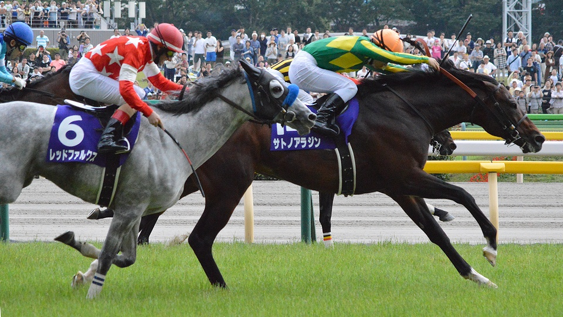

安田記念
予想印
| 馬名 | |
|---|---|
| ◎ | ソングライン |
| 〇 | サリオス |
| ★ | ファインルージュ |
| ▲ | イルーシヴパンサー |
| △ | ダノンザキッド |
| △ | シュネルマイスター |
2年前にグランアレグリアでアーモンドアイを破ったのは記憶に新しいです……
ソングライン自身も府中1600は富士Sで勝っています。前走は5着ですが肩慣らしと思えば。
サリオスは人気こそ低いですが、前々走の香港マイルは3着。1着はあのゴールデンシックスティなので仕方ありません。
惨敗した前走はスプリント戦なので問題外。鞍上がレーン騎手の時の成績は[2,2,1,0]と全て馬券内なのもプラスです……
ファインルージュもオークスを除けば全て馬券内なので1600～2000mなら▲でも良いと思い付けました。
ルメール騎手がシュネルマイスターを選択しましたが、上位人気の武豊騎手なら結果を出せると信じます。
そのファインルージュに勝ったイルーシヴパンサーは条件戦から勝ちを積み重ね4連勝。勢いは一番あると思います。
最後に△
川田騎手×ダノンの王道コンビであるダノンザキッド、
シュネルマイスターは近走の成績と調教の動きが良くありませんが……掲示板なら何とか。
ダイワメジャー産駒の2頭と芝マイルでの実力が未知数なカフェファラオは外しました。
カフェファラオが勝てば6頭目の芝ダートＧⅠ制覇せすが。